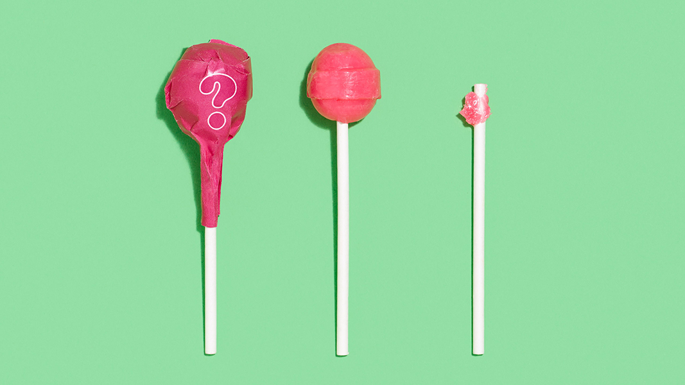

* // About Me

Byron Chow recently completed his Artist Residency at NYU Steinhardt,
and is currently based in New York working as a freelance designer.
Previous experiences include Art Direction and design for J Crew, Viacom, UnderArmour and Opening Ceremony.
Previous experiences include Art Direction and design for J Crew, Viacom, UnderArmour and Opening Ceremony.
His other personal interests include street art, animal facts, hats (of all shapes and sizes),
trying strange foods, and the pursuit of happiness.
For inquiries, resume request or additional information, feel free to contact him at byronchow7@gmail.com.
He is always looking to collaborate and work with like-minded and creative individuals.
For inquiries, resume request or additional information, feel free to contact him at byronchow7@gmail.com.
He is always looking to collaborate and work with like-minded and creative individuals.
© Byron Chow 2018